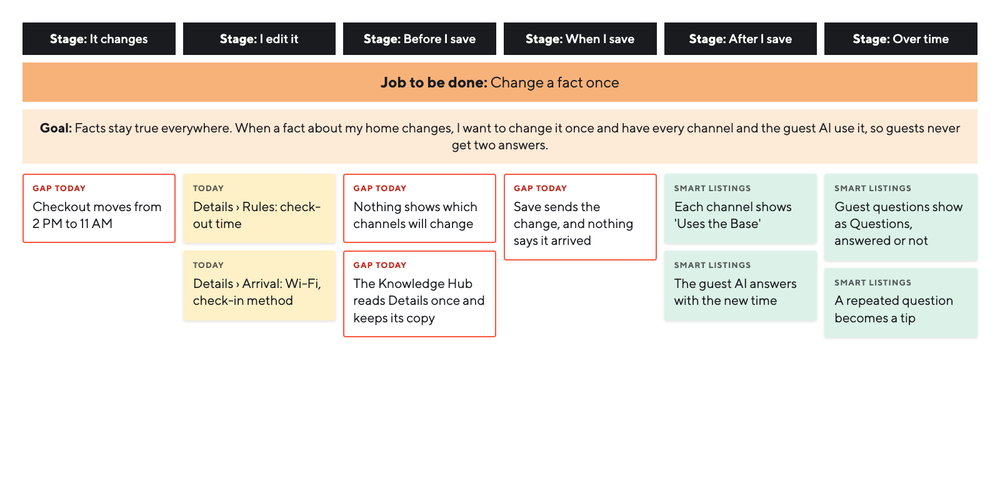
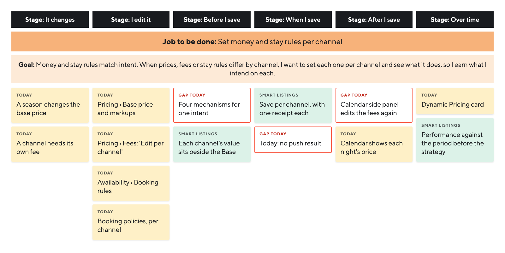
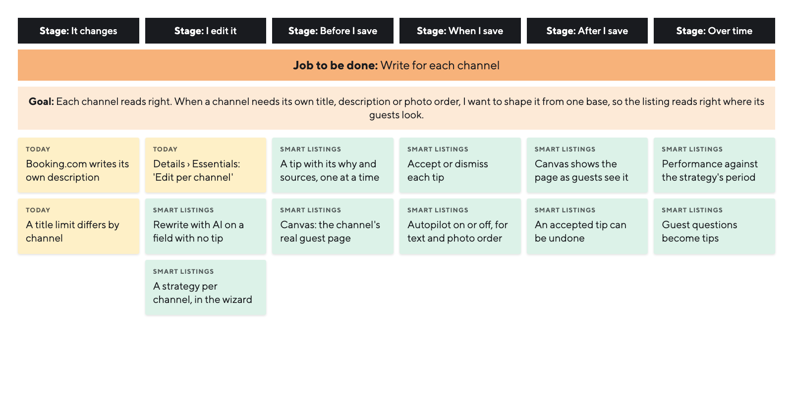
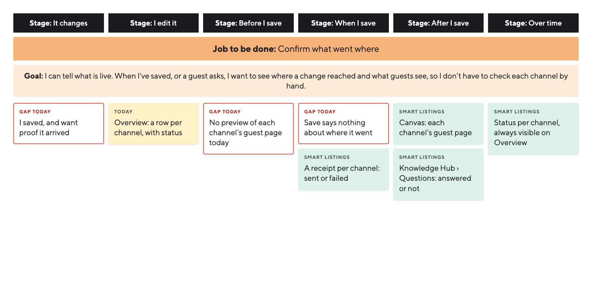

In the inbox
PriyaNew to a PMS
Fears bad reviews
Hours a month
None, by design
The project guide for product, engineering and design: what we are building, why, and how we will know it works.
Introducing
Set it once, earn more.On every channel.
A new way to run every channel: you stay in control, work faster, and keep improving.
IntroWhy this project
What we are building, and what it should change.
One listing lives on many channels. Each edit is repeated by hand, so facts drift and channel rules get broken.
One base of facts, a strategy per channel, tips that explain why, and a preview of the real guest page.
North star: listings with a strategy-aligned field on every active channel. Seven experiments measure it.
IntroWhy it matters
Every channel has its own guests, competition and rules. Hostaway manages the listing as one thing, in one crowded place.
Set once, the listing drives revenue.
AI can keep tuning it.
Guests look for
Hostaway today
No view per channel Listing spread across screens Field-by-field edits
IntroScope and goals
What changes when each channel can be different, and how much control do hosts need?
What we added
The concept takes that question deeper:
From copy to strategy. A view and a goal for every channel, not just words.
From the text to the whole listing. Tips for pricing, availability and policies too, built on data.
You choose the autonomy. Review every tip, or turn on an optional Autopilot inside your guardrails.
From launch to results. Tracked over time, before and as it evolves.
Our hypothesis
It's true when
Changes take less time Hosts trust what goes out Hosts keep the tips More bookings on every channel
IntroThe idea
One base
Facts about the home, written once. Each channel reads what it needs.
A strategy per channel
Every channel has its own guests and competition. Set a goal, an audience and guardrails for each one.
Tips backed by data
Listing, pricing, availability and policies, each tip with its reason: guest questions, home facts, similar homes.
You stay in control
Review every tip, or turn on Autopilot inside your guardrails, and choose what it may touch. Money always asks first.
Measured
Each strategy tracked over time, from the weeks before it onwards.
Every field reaches each channel in one of four ways.
Listing base · shared
Summary
“A sunny two-room flat full of original paintings…”
No Base
Check-in method
One field, four cases
IntroThe shift
Today, a host edits field by field and hopes it works.
With Smart Listings, they set a goal and AI helps them reach it.
Product audit
IntroGoals
Five goals, each with its metric and a target at 30 and 90 days.
More bookings
Hostaway already has every booking and request per listing, so the baseline is its own weeks before. Season moves numbers, so the bar stays modest: +5%, then +7%.
Adoption
The goal is 35% of eligible properties at six months. 10% and 25% are the steps.
Refining and tips
New behaviours with no baseline yet. A third of tips accepted at first, rising to 40% as tips learn what hosts keep.
Support
Tickets lag about two months: 5% fewer at first, 10% by 90 days.
How we set them
IntroProcessWith AI
Six stages, each with the methods we use.Agents read and make at every stage. At every gate, we decide.
What is really going on in the product today, and what must we learn before designing anything?
MethodsProduct auditDesk researchAssumption mappingStakeholder interviews
Outputs
Current-state mapHeuristic evaluationChannel constraintsCompetitive analysisResearch questions & assumptions
DiscoveryProperty management, mapped
We mapped property management end to end in Hostaway's product.
Property10 sections
SoEach channel's listing gets its own pages, with tips on every channel.
One trial account, one real Airbnb listing, walked section by section.
Screens captured
59
from the trial account, plus 14 live captures
Fields inventoried
135
each with its page, its control and its channel scope
Heuristic findings
26
on the listing screens, against Nielsen's ten and six for listings
Public sources read
46
help-centre articles and changelog posts
Hostaway's help centre
Hostaway's help centreThe full map
DiscoveryProduct audit
Its copy drifts, the AI answers from it, and guests’ questions go unseen.
Details
Amenities
Knowledge Hub
Is the apartment wheelchair accessible?
Yes, the apartment is wheelchair accessible!
Same facts, written twiceSource-of-truth claritySev 4
Edits to Details don’t reach it
Answers from the copy, not the listingAI transparencySev 4
SoListing details live once, in the Listing base. The Hub reads them and learns from guests’ questions.
The Hub copies the listing instead of reading it.
Details
Knowledge Hub
Hostaway’s help centre
Recreated in Hostaway’s own componentsHostaway’s help centreSeverity 0 to 4, one evaluatorHow the Hub works today
DiscoveryHeuristic evaluation
Hostaway keeps per-channel values field by field, never as one listing.
What does our Airbnb listing say?
~15fields
No page shows the answer
Per-channel awarenessSev 47 ways to say “different on each channel”Consistency and standardsSev 3
SoEach field saves on its own: a change reaches the channels that read it. A custom value stays on its channel.
Product auditSeverity 0 to 4, one evaluator
DiscoveryData analysis
Five sources, five questions.
1Which fields do hosts override most?
2How often does a ticket say the assistant contradicted the listing?
3How many tickets ask where to edit, and what do they cost?
4Does listing trouble grow with portfolio size, and when does it lose deals?
5What do hosts ask for unprompted?
SoIt sets what tips must cover.
Data comes first because exports need no recruiting, and they sharpen the questions we put to hosts. The alternative was to interview first. That risks asking hosts what tickets already answer. The constraint is access, so we specify each pull.
Why data first
DiscoveryResearch questions & assumptions
The Smart Listings hypotheses, scored by importance against evidence.
Refuted, then a rule
Booking.com writes its own description. So a host's voice there is the quality of their facts.
Test these first
Importance runs from 1, a detail, to 5, the thesis changes. Evidence runs from 1, belief only, to 5, settled. High importance with low evidence goes first. We rejected ranking by likelihood alone because it hides the quiet risks.
Booking.com and Hostaway help pagesHow we score
DiscoveryResearch design
Ten methods over four weeks. Data comes before hosts, and every unknown has an owner.
Get ready
Which assumptions would sink the design?
Kick-offAssumption mappingData accessRecruiting
Data and teams
What can Hostaway write on each channel, and how fast?
Sales calls (Gong)Ticket analysisField override usageKnowledge Hub usageStakeholder interviews
Hosts
When do hosts trust an AI tip? Where do they look for listing content?
User interviews
Synthesis
Which pains share a cause?
Cluster analysisAffinity mappingThe readout
Who to talk to
What do hosts need, what will the channels allow, and what structure does that add up to?
MethodsUser interviewsData analysisTree testing
Outputs
Object modelNavigation optionsSitemap
Interview synthesisInsightsPersonasJobs to be doneProblem statement
ResearchMethod
The study answers it with 25 user interviews and call and ticket data, on top of public sources.
1The question
Do hosts vary money and stay rules per channel, or only the words?
2Who we talk to
25
user interviews, including hosts who churned or never joined after a trial
3What we check
600
sales calls to review
300
support tickets to tag, plus 100 untagged
4Public sources we start from
115
reviews and posts to read
89
channel concepts to map
36
competitor products to compare
5How an insight gets strongStrong means three sources of two kinds, one of them a host's own words
Interviews and ticketsSales callsPosts and reviews at trustpilot.com, channel docs and competitor help centresWhy this design
ResearchPersonas
The truth lives where it's easiest. Hostaway earns trust only when every channel matches it.
In the inbox
PriyaNew to a PMS
Fears bad reviews
Hours a month
None, by design
On Airbnb
MartaFamily host
Varies money only
Hours a month
About 1 hour
In a doc
DanaSEO optimiser
Tunes titles and photos
Hours a month
6 to 8 hours
In a sheet
CallumPortfolio manager
Compliance and markups
Hours a month
About 20 team hours
Example host types. Photos are Unsplash stock, not real hosts
ResearchExample synthesis
Nobody's real version is Hostaway's.
The AI speaks from a store no channel sees.
Saving says nothing about where it went.
They want to see a change before it's written.
A change shown as a field is hard to picture.
Per channel goes beyond copy: photos, money and stay rules too.
Copy per channel is one persona's job.
On Booking.com, the voice is the facts.
SoA canvas. Each channel's real guest page, with the change on it, before save.
ResearchPain points
Hosts keep the truth elsewhere, can’t see changes, and distrust AI that sounds surer.
Product decisionOne Base holds each listing detail once, and every channel inherits it.
Product decisionCopy, photos, money and stay rules can each differ per channel.
Product decisionEach change shows its reach first, then a receipt confirms it.
Product decisionEach suggestion says why, where and how to undo it.
Hostaway’s public feedback board, where hosts ask for what they need
ResearchInsights
Hosts can't see where a change lands
Saving says nothing about where it went. So they want to see a change before it's written, and proof after it arrives.
Managing a listing is scattered. The real version lives on Airbnb, in a document or a sheet.
Money and stay rules differ per channel, not words.
Copy per channel is one persona's job. Only the SEO optimiser writes it.
On Booking.com the voice is the facts. Hosts accept that with a preview.
ResearchJobs to be done




Today's functions and gapsHelp CenterSmart Listings, our conceptWhy jobs
ResearchChannel constraints
Booking.com writes its own description, so one editor can’t cover every channel. It is one example of a limit, and each channel has its own.
Airbnb
Hostaway writes it
An edit made on Airbnb forks the field
Booking.com
Booking.com writes it
From structured facts. Hosts can only request a fix
Vrbo
Hostaway writes it
Edits made on Vrbo are overwritten
Expedia
Codes, per room type
Amenities and rules are fixed codes. Who writes the description is still open
Direct
Hostaway owns it
No limits on title or description
| Channel | Title | Description |
|---|---|---|
| Airbnb | ≤ 50 characters | Sections, no published limit |
| Booking.com | 3 to 255 | Written by Booking.com |
| Vrbo | 20 to 40, banned words | One field, 400 to 10,000 characters |
| Expedia | Per room type | Open question |
| Direct | No limit | Editable per channel |
The channels’ own documentation, for the rows that are filled in
The channels’ own documentation, Booking.com as one exampleThe limits
ResearchCompetitive analysis
Pricing tools check your rate against similar listings. The listing itself goes unchecked.
Comps for price, today
Today4 of 6market tools price by comps
Comps for the listing
Concept| You | Similar | |
|---|---|---|
| Title length | 31 | 46 |
| Photos | 14 | 27 |
| First photo | Bedroom | Living room |
| Amenities named | 4 | 9 |
| Description sections | 2 | 5 |
9 of 12 open on the living room.
2 of 36products point comps at the listing
SoAI comps for the listing, per channel, as the assistant tips.
Comps for price: PriceLabs and Beyond’s product pages, pricelabs.co and beyondpricing.com
ResearchProblem statement
The problem
Hostaway keeps a home’s facts in two copies, varies the wrong things per channel, never says where a change went, and offers AI that persuades instead of being safe.
How might we…
Two copies
keep one record of the home that every channel and the assistant read?
Wrong per channel
give money and stay rules one per-channel pattern, and make voice a choice?
Unseen changes
show each channel’s listing, and say where every change went?
Persuasive AI
let the AI write only what the record can back?
The Knowledge Hub repeats the listing in its own copy, and learns nothing from guests’ questions
"Per channel" is built field by field, for copy. Hosts vary money and stay rules
No screen shows one listing on one channel, and Save doesn’t say where a change went
The AI persuades instead of being safe by construction
Hostaway’s product, for causes 1 to 3The example research, for 2 and 4
The product auditOur synthesis of the example researchFour root causes
ResearchObject model
An object model is a product's nouns: what it's made of, and how they connect.
Property
The home. Every fact, once.
Listing
The home on one channel.
Sync direction
not yet established
Source
Where each fact came from.
Projection
One fact, worded for each channel.
Copy
What guests read: shared, or per channel.
Receipt
Proof a change reached the channel.
A fact comes from a Source, lives once on the Property, is projected to each channel, and becomes the Copy on a Listing. Every save returns a Receipt.
Exists todayNew: 4 of 22, missing today
Exists today, in some formNew: Hostaway lacks it
A Property holds Facts. Each Fact remembers its Sources and reaches each Listing through a Projection, or an Override. Guests read the Base's Copy unless a Listing has its own, always grounded in Facts. Every change goes out with a Receipt.
Marked: the four new objects
On screen
The truth band
→Shared: the Listing base, which the Knowledge Hub reads
Each listing band
→A channel's own pages
Property, listing and the sync directionThe whole model
ResearchChannel constraints
A host shouldn't need four dictionaries to say they have a bath. Hostaway does the translating.
The host says it once
Bathtub
Hostaway translates it for every channel, as it already does for amenities
Our canonical field map, from each channel's own documentation: Expedia's Product API for Expedia
The bathtub is one example. Same pattern forWasherBedsSmokingHouse rulesand every other fact
Today each field has two statesOne valueEdit per channel
Channel documentation, and Hostaway's help centre on amenities per channel
Airbnb, Booking.com, Vrbo and Expedia documentation · Hostaway's help centreWhat it forces
ResearchNavigation options
We drew five ways Smart Listings could fit the menu, and compared them on the same tasks.
1Mode switch
A switch swaps the whole menu
Focused workspace
Other sections vanish
2One listing hub
One hub, a channel selector inside
No second copy
Biggest migration
3Sub-nav section
Today’s menu, plus one group
Nothing moves
Two copies drift
4Channel-first
Shared, then each channel’s pages
Fewest clicks
Grows per channel
5Assistant drawer
A drawer on every page
No menu change
No room, no home
SoShared holds each fact once. Each channel’s pages are where it can differ.
Shared
Each fact once, for every channel
Channel-specific
Each channel’s own pages. They show the Base until you change it there.
Airbnb
ListingPricingAvailabilityBooking policies
Booking.com
ListingPricingAvailabilityBooking policies
Direct
ListingPricingAvailabilityBooking policies
The prototype’s property menu, as we chose it
Before the five menus, we compared seven structures on paper. Two ideas carried over.
Record-first
Every fact once, grouped by kind
Became Shared
State-first
What needs you comes first
Became Needs you, on the Overview
Compared by us against the product's own menu
Five menus we drew in Paper and compared on the same tasksThe menu
ResearchSitemap
Laying out the sitemap, we saw hosts need to know what each channel repeats from the Base.
What each channel takes from the Base
On every field
Summary
Summary
Record-first won our scoring. When Smart Listings needed a home, we drew five menus and chose channel-first: fewest clicks on our frames.
The test we specify
A tree test against today's menu and record-first, 30 hosts each. It passes within 5 points of record-first, and at 70% on channel tasks.
Its risk is copied facts, so we designed that out
Our design reasoning. The tree test we specify checks it
The listing fields of our prototype's sample flatThe trade-off
What are the radically different ways to solve it, and which one earns the build?
MethodsDivergent ideationPattern referencesWeighted scoringDesign review
Outputs
Design principlesConcept directionsFinal concept
ConceptDesign principles
We rewrote our first draft as the design took shape. Three changed, one was added, and number three became the spine.
| Our draft | Rewritten | Why | Confidence | |
|---|---|---|---|---|
| Nothing is lost | → | Nothing written unseen | A restore point answers the wrong moment | |
| None | → | Facts once New | Two stores of facts disagree | |
| Facts shared, voice local | → | Money and rules vary. Voice is a choice | Money and rules vary per channel, words rarely | |
| Show the why first | → | The AI says only what the home can back | A reason raises acceptance, not scrutiny |
Confidence is our design judgement. It is highest for the first, second and fourth
1, 2 and 7 are floors every direction had to meet. 3 to 6 are where the directions differ.
Confidencefor 1, 2 and 7for 3 and 5
Where each came from
ConceptDivergent ideationRound one
Each had its own primary object and first action, all drawn on the same flat. None won every screen, so we kept two that cover each other.
Channel Canvas
“Check our shop window”
What will guests see?
Golden Record
“A master spreadsheet”
The assistant
“Tell someone what you want”
Decision Inbox
“Only show us what needs us”
What needs us?
Merge & Versions
“Drafts and versions”
Fact Blocks
“A house manual we write once”
Home Tour
“Walk us through your flat”
Channel Canvas
Golden Record
The assistant
Decision Inbox
Merge & Versions
Fact Blocks
Home Tour
Knowledge Hub
Listing studio
Portfolio
No direction won every listing screen. The Canvas won the studio and the Inbox the portfolio, so we took them as a pair.
Scores are our design judgement against fifteen criteriaFrames and scores
ConceptPattern referencesRound two
We ran the same Smart Listing flow through twelve patterns people already trust. Two became the core of the build, and four lent it a part.
In the buildA part of it
Listing score
Google Ads · Yoast
Live canvas
Squarespace · Notion
The assistant on every screen
Shopify Sidekick · Notion
Channel composer
Buffer · Hootsuite
What-if simulator
Credit Karma · PriceLabs
Strategy picker
Grammarly · Spotify
Goals and guardrails
Performance Max · Advantage+
Suggesting mode
Notion · Linear
Readiness guide
Squarespace · Vanta
You vs similar homes
Hootsuite · Tripadvisor
Rate calendar first
Turo · KAYAK
Guided pass
Zoho CRM · Navattic
Every direction ran the same eight steps under the same rules, so only the pattern changed.
Same flow
ConceptFinal concept
Round one set the shape. Round two gave the model. A strategy per channel turns into tips with their why, seen on the channel’s real page.
Round one
Round two
In Smart Listings
A strategy per channel
Who it’s for, a goal, guardrails
Tips with their why
One at a time, with sources
The Canvas view
Each channel’s real page
Rewrite with AI
Any field without a tip, even with Smart Listings off
43 comments on the live canvas
set the model: switched on per property, a strategy per channel, one tip container, Classic and Canvas, Performance
Four steps were too many
so the strategy became a short wizard, one question per screen, on Hostaway’s own pattern
Build it on the real thing
so the model left Paper for the coded prototype, with the channel-first menu
How it converged
Smart Listings, built in code on Hostaway’s own UI, and pruned in every review.
MethodsPrototyping in codeDesign reviewsResponsive designAccessibility review
Outputs
Solution overviewUser flowsTips & AI rewriteCanvas previewDesign systemMobile & tablet
DesignSolution overview
Facts live once, channels keep only what differs, and you decide what the AI does alone.
Creates Airbnb’s own value. The Base stays as it is.
Shared: every fact once
Channels: one page set each
Every field shows its source
A tip, with its why
Every fact lives once, in Shared, and each channel holds only what differs. A strategy per channel produces tips, each with its why. The host accepts or dismisses them, unless Autopilot is on for words and photos.
We reviewed the running build, and each review took something out.
Versions
A concept to learn before any payoff.
One current strategy
Compare mode
One baseline already answers “did it work?”
The weeks before, in grey
Setup page
It looked just like Strategy.
One full-screen wizard
Canvas editing
A second editor for the same field.
A tap opens the field
Autonomy dial
Three levels per content type. One switch is simpler.
Autopilot, on or off
The map, and what we cut
DesignUser flows
Where each one starts, and what the host has at the end of it.
Each flow is built in the prototype and specified in NotionFlow 1Flow 2Flow 3Flow 4Flow 5
DesignUser flows
The tips flow
DesignListing base
Every channel and the Knowledge Hub read the same listing detail. So the Listing base holds only what channels share, and each field shows its reach.
Listing base · Arrival
Check-in time
Kept once, here.
Read byAirbnbBooking.comDirectKnowledge Hub
Source of truth
Its reach, under every field: never a surprise
DesignKnowledge Hub
Guests’ questions reveal gaps, and each gap becomes a tip for the Base or one channel.
Inbox
Is there free parking?
Knowledge Hub
Listing base
The assistant
1A guest asks in the Inbox
2Counted, answered or not
3A gap becomes a tip
4The host’s answer becomes a fact
5Every channel and the AI use it
How the Hub feeds the tips. A gap becomes a shared fact for the Listing base, or a better answer in one channel’s listing, such as Airbnb’s description. Sample data
The flow
DesignChannels
The Base is where a channel starts, not where it stops. On every field, the host sets how much each channel takes from it.
Follows the Base
The same on every channel.
Airbnb · Listing
Other details to note
Customized for Airbnb
Its own words, for Airbnb search.
Airbnb · Listing
Summary
Only on Airbnb
No other channel asks for it.
Airbnb · Listing
Check-in method
Booking.com
Booking.com writes its own description. So on its page the field is read-only, a lock replaces the ⓘ, and the lock says why.
Booking.com · Listing
Description
Every field is one of four cases. “Use the Base” keeps the custom text, so “Customize” brings it back.
Set by the channel
DesignStrategy
Opt-in per property, since not every host wants AI. It reuses Hostaway’s Add-property wizard. Each suggestion says why.
Goal
Who it’s for
Guardrails
Autopilot, off by default
Airbnb · Strategy 1 of 3
Smart Listings never goes outside them.
Keep our nightly price between
Prices and fees, Minimum stay and rules, Cancellation policy · Always asks you. This can’t be turned off.
Opt-in per property, because not every host wants it, and turning it off keeps everything. The wizard copies Hostaway’s Add-property flow, which hosts already know. Closing it halfway changes nothing.
The three strategies
DesignTips & AI rewrite
A suggestion without a reason is a guess. Tips open in the Tips panel, with their sources.
…by the window with an ergonomic chair and chair, a 27" monitor, monitor and 250 Mbps fibre Wi-Fi (tested on 12 Sep), plus the paintings, a sofa and…
Each field shows one AI marker at most: its tip, or Rewrite with AI where you can type right now.
Purple: the AI suggestsOrange: you ask
Both use the same card, so hosts learn the AI once. Rewrite with AI works with Smart Listings off too.
Tips cover prices and stay rules too, where hosts differ most per channel. On a shared field, the tip says so.
Applies to every channel
One panel and one tip at a time keep the decision next to the field it changes, with its reason in view. With Autopilot off, nothing changes until the host accepts, and Undo withdraws the change it sent.
One AI per field, and prices tooThe flow
DesignCanvas preview
Hostaway publishes with no preview today. We rebuilt each channel’s real guest page. A tap opens the field behind it, its tip or Rewrite with AI.
Classic or Canvas, one switch
Changes publish without a preview
DesignPerformance
Since the strategy started, against the same weeks before.
Airbnb occupancy
+20points
60% since 14 Aug, 40% before
Airbnb revenue
+39.2%
€1,507 since 14 Aug
7 weeks before 40%Since 14 Aug 60%+20 points
25 Jun14 Aug25 Sep
VersionsStrategy versions on Airbnb
Version 1Since 14 Aug · +20 points
vsVersion 2From the next change
Where Performance compares one strategy with another.
Occupancy on Airbnb, by version
Version 1
Since 14 Aug, 7 weeks
Before
40%
Since
60%
+20 pointsVersion 2
From the next change
Compared with
Version 1
Since
Not started
NextCards and bars follow Hostaway MetricsStrategy versions
DesignAutopilot
With Autopilot on, text and photo-order tips apply inside the host’s guardrails, since they are cheap to undo. Prices, stay rules and cancellation always wait for a yes.
May apply on its own
Always asks you first
Locked: it can’t be turned off
The editor says Autopilot is on
Should Autopilot apply tips for you?
Off is the default. Tips wait for the host, and nothing changes until they accept one.
Switch it any time
The Autopilot question
DesignMobile & tablet
To make that possible, we built an app mode that runs every screen as Hostaway’s mobile app: sheets, swipe-back, tips in a bottom sheet.
DesignDesign system
They change how every part of Hostaway is organised, not only listings.
Drill-down navigationOnly the main menu had it. Now every section does.
Counts that moveThe total on the parent when closed, each page’s own when open.
Property name
Guests see it in search.
Stacked fieldsLabel above the input, so Tips or Canvas fit beside it.
Save only when something changedAnd one outlined × for every close.
Built on Hostaway’s own components
DesignDesign system
Each pattern is weighed with the team that owns the area before it spreads.
Tip card
Tips drawer, markers
Rewrite with AI
Channel badges, reach caption
Canvas preview
Save toast, Undo
Section tabs with tip counts
Reaches
Team review before it spreads
Raspberry names are the patterns we challenged
Each check sets the alternatives side by side before anything spreads
Built on Hostaway’s own tokens and componentsThe areas they reach are our design readingThe impact
Do hosts understand it and trust it? And how is it measured?
MethodsBenchmark testUsability testingA/B testing
Outputs
Test ladderMetric treePre-mortem
Test and measureTest ladder
Six steps, each measured against today’s product.
Same tasks at every step, so results compare. Accessibility gates each one.
Where facts live
Where does this fact live? What happens on Airbnb if you change it here?
The Base
If you change the Base cleaning fee now, what happens on Booking.com?
Why this tip
Why was this suggested? Which channel does it change?
Autopilot
Would you let it apply this kind of change by itself? Which kinds never?
Every bar is written before its step runsThe probes and the bars
Test and measureMetric tree
Each branch has a metric, a bet and an experiment.
North star
Strategy-aligned fields on every active channel
Moved by E1 to E7
Rule
Written before launch
Metric
Bet
Experiment
+8pts
Listings with a tailored field
H-04A voice per channel
E1 · Strategy per channel
+5pts
Tip acceptance rate
H-09Trust in AI tips
E2 · Tips with a why
−25%
Time to finish a description
H-10Channel copy sells
E3 · Rewrite per channel
<8%
Undo rate, as a bound
H-15What Autopilot may touch
E6 · Autopilot setting
North star · Experiments E1 to E7
Strategy-aligned fields on every active channel
Adoption
E1, E2
Quality
E2, E3
Outcome
E3, E5
Guardrails
Watched daily
Kill criteria
A guardrail past its bound 2 days running
Undo above 15% of applied tips
Any channel-rule violation live
Bounds and minimum effects are fixed before launch
Rationale
One north star keeps every experiment pointed the same way.
Alternative
Revenue per listing. Rejected, because it moves slowly and hides which change helped.
Constraint
The host account is the unit, because a host’s listings share tips.
What went wrongEarly signalWhat we’d do
Ordered by how much each would hurt. Every threshold is written before launch
Minimum effects are set before launchThe metric treeHow it could fail
ExperimentsFramework
Six steps, and each one has its rule written before launch.
Guardrails are watched every day, and they alone can stop a run early.
The unit
A host’s listings share tips, so splitting by listing leaks. The host account keeps groups clean.
The effect size
Set by what is worth shipping, not by what the sample can detect.
The holdout
Five percent stay on today’s product, so the long-run effect stays measurable.
Owners: design writes the hypothesis, data the analysis plan, engineering the flagsWhy this frame
ExperimentsPortfolio
Each tests one decision against today’s product, with its ship bar set first.
| Hypothesis | Guardrails | |
|---|---|---|
| E1 | A strategy per channel raises tailored fields | Undo, tickets, views |
| E2 | The why behind a tip raises acceptance | Undo, rule violations |
| E3 | A rewrite per channel cuts edit time | Edit after accept |
| E4 | Seeing the guest page lifts confidence | Undo, time to decide |
| E5 | Results per strategy bring hosts back | Tickets, load time |
| E6 | Low-risk tips can apply themselves | Undo, violations, tickets |
| E7 | A channel-first menu is easier to use | Time on task, tickets |
Each bar is the smallest change worth shippingHypotheses and guardrails
ExperimentsReading a result
The primary metric first, then every guardrail, then the rule decides.
Readout
E2 · Tips with a why
4,200 hosts per group, four weeks
Measure
Read
Verdict
+5.4pts
Primary metric
31.0% to 36.4%, interval +3.1 to +7.7
Above the +5 pts bar
6.4%
Guardrail, bound 8%
Up from 6.1%
Within its bound
0
Guardrail, bound 0
None shipped to a live listing
Within its bound
Flat
Guardrail, bound +5%
Per 1,000 hosts
Within its bound
Decision: ship. The rule written before launch was +5 pts with undo not higher than its bound.
By channel
Airbnb, Booking.com and Direct read separately. Exploratory, never the decision.
By size
One listing, a few, a portfolio. A split that looks good starts the next experiment.
Owner
Data writes the readout, product makes the call the rule allows.
Segments
ExperimentsRollout and guardrails
Four stages, each with a go criterion and an owner.
Kill criteria
A guardrail past its bound 2 days running
Undo above 15% of applied tips
A rule violation on a live listing
Support owns the ticket guardrail at every stage
How do we tell it, what else does it change, and how does it hand off?
MethodsSystems mappingHorizonsKill criteriaHandoff
Outputs
Second-order effectsHorizonsOpen edgesSmart Listings across Hostaway
Systems and handoffStory and product
1What hosts hear
On Airbnb
DescriptionUses the Base
SummaryCustom for Airbnb
Check-in methodAirbnb only
Property name updatedApplied
Weekly discountAsks you
2Where the product goes
Mapped on the next slide
Rationale
Hosts care about two promises: their facts once, and the last word. The story leads with both.
Alternative
A feature tour. Rejected, because it describes screens and not what changes for the host.
Constraint
Money always asks, so the story never promises hands-off pricing.
Why this story
Systems and handoffService map
Facts kept once and one kind of tip can reach every part of Hostaway.
CoreExtendsReachImplied
Shared
Core
Extends
Reach
tips · the Base results the Base answers price, positioning tips periods facts, once questions tips receipts goals answers, insightsNow
Tips and Performance in the prototype
Questions and insights: a concept
Needs
How
Define “similar” with Data. Aggregates, never another host’s text
Count Inbox questions. Answer only from the Listing base and confirmed Hub facts. Gaps become tips
With
Worked if
Tips citing similar homes accepted, not reverted
Fewer questions left open
One tip contract, for any area
Calendar
Inbox
How
The design system owns the contract. Calendar and Inbox first, then each area adds its tip types
With
Worked if
Accepted out of shown, per area. Undo ≤ 5%
One channel, week by week
Weekly occupancy on Airbnb. Each strategy is its own period, compared with the weeks before it and with similar homes.
Before
Strategy 1
Strategy 2
Too soon
Similar homes
Tip applied
Specified
One channel against the same days before. Eight cards, four charts
Needs
Measure
Show
Periods as bands, applied tips as dots, similar homes as the season
MetricIt saysIt opens
How
Events and a fair minimum period, agreed with Data. Then the assistant answers and opens the tip
With
Worked if
Half of adopters act on a tip each month
Experiment portfolioDesign
Per-field confirmationIntegrations
AI checked offlineAI and ML
Performance eventsData
Experiments gate each change
Import and setupSame Base
Similar homesImplied
Performance over timeImplied
A deeper Knowledge HubImplied
Same Base, one new way in
Sequential testsPer stage
The assistant widensWhere it helps
Tips everywhereOne contract
Typed factsAPI
Once each rule is met
Patterns that travel
FactSourceInheritanceTipReceiptAutonomySharedCheck-in time
Airbnb
Booking.com
Direct
Guest replies
Operations
One wrong fact now reaches every channel and every guest reply, so every fact shows its source and its reach.
If a channel bans automated edits, the assistant stops applying tips there. Tips still show
Hard for others to copy, but it uses other hosts’ data. Legal reviews it first
Fewer “where do we edit?” tickets, more “why did the assistant change this?”
Effects the design anticipates
If this happensThresholdWhat we’d do
Thresholds are set before launch
Open edgesPerformanceHorizonsWhat it sets off